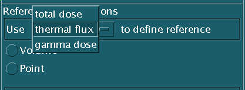

SERA
Simulation Environment for Radiotherapy
Applications
User's Manual
Version 1C0

SERA
Simulation Environment for Radiotherapy
Applications
User's Manual
Version 1C0

8. Statistical Dose Combination and Dose Editing
Following the calculation of the dose results with seraCalc and seraMC for each field, it is necessary to properly combine the individual field dose results into an appropriate plan. This is accomplished by using the seraPlan tool. SeraPlan combines the dose results from up to 24 fields (maximum of four fractions, each with up to six fields), with source strength, boron, and exposure weighting, to provide an editable seraMC restart file containing the weighted, normalized dose results. A plan file is also written, which contains the weighting data for each field, along with fraction and plan totals for boron and exposure. An existing plan file may be loaded from the File pulldown menu in seraPlan.
The dose combination is performed by weighting each specified field dose component by the appropriate weighting factors. All dose components are weighted by the source strength and exposure. The boron dose weight factor also includes the boron concentration, and the gamma dose weight factor includes the total gamma source for each field, which consists of both the source gamma and the capture gamma source from neutron capture in tissue, and the gamma repair factor (see Section 8.3.1.3.4) from the input display. The total dose is the sum of all the dose components. In all cases, the doses are normalized to unit exposure, unit source strength, and unit boron concentration. This allows the user to examine the effects of total plan exposure and average boron on the dose results, using the seraDose, sera3d, and seraPlot modules.
Dose editing allows the user to compute a variety of meaningful parameters to characterize the treatment plan. Doses may be computed at a point, along a line, as contours on a plane, or they may be integrated over a volume. Boron concentration and RBE values may be incorporated into these edits in several different ways. In addition to the extensive standard edits, the user may specify up to 20 additional point edits, 10 line edits, 10 volume edits, and 4 plane (contour) edits.
As with the other modules in the SERA system, seraPlan may be executed from the Main Menu, cross launched from any other module, or run from the command line by typing seraPlan. A sample seraPlan display is shown in Figure 8.1.

Figure 8.1. Sample seraPlan display.
The File menu in seraPlan, shown in Figure 8.2, contains six selections - Load plan file, Apply/save plan, Clear window, Check version, Launch, and Exit.
Figure 8.2. SeraPlan file menu display.
The Load plan file selection pops up a file selection widget that allows the user to traverse the file systems and choose a plan file to load into seraPlan. This will read all the relevant information from the selected file and display it in the seraPlan main window. Note that if an attempt is made to load a file that is not a plan file, no error messages are generated, but the results are unpredictable. Generally, this will produce a default configuration display, with unintelligible information in the data fields. It is advised that the user load only files known to be plan files into seraPlan.
The Apply/save plan selection also pops up a file selection widget, but this only allows the user to choose a directory into which the plan and restart files will be written. After the directory selection is made, the plan file is written, and the dose combination is performed as specified. The plan file name and restart file name are determined by the patient ID entry.
The Clear window selection will re-initialize the data fields in the seraPlan display. This operation is not reversible - all information is permanently lost. A popup window verifies that this is actually what is desired by the user.
The Check version selection spawns an Internet process that accesses a database of the most recent released versions of all SERA modules, and reports both the most recent version and the version executed by the user. This allows users to determine whether or not the version of seraPlan used is state-of-the-art.
The Launch selection produces a submenu listing the other modules in the SERA system. Selection of one will launch that particular module. This cross launch capability is built into all the modules in the SERA system.
The Exit selection exits seraPlan, without saving any information in the window. A popup verifies that this is actually the desired action.
The Edit menu, shown in Figure 8.3, lists the four types of user-defined edits that may be defined. Each of the four (point, line, dose-volume histogram, and contour) activate a popup that allows the user to define the various parameters needed for each type of edit. Details on each are provided in Section 8.4.2.
Figure 8.3. SeraPlan edit menu display.
The Perform Edits menu item launches the computation of the edits. Before the actual edit calculations begin, seraPlan prompts the user to define a directory into which all files will be written, and then performs a conflict check to see if any requested files are already defined in that directory. If the conflict check fails, the user is asked for permission to overwrite the existing files. If permission is not granted, the edit calculation halts, and the user must launch the computation again, specifying a different save directory. If execution is allowed to proceed, the standard edits are performed first, followed by the user-defined edits. A status window is displayed so that progress through the edit calculation may be monitored.
The Preferences menu in seraPlan, shown in Figure 8.4, has one selection, Preferences, which allows the user to set a variety of default values for both the combination and edit modules. The information entered is stored in the file $SERA_HOME/Resources/SeraPlan/SeraPlan.rsc. Note that in order to use the preferences, this file must be set to read-write mode (644), by using the system command chmod.
Figure 8.4. SeraPlan preferences menu display.
8.2.3.1. Fields/Fractions Preferences
This panel, shown in Figure 8.5, allows the user to set the default number of Fractions and Fields per Fraction. These values are displayed on the appropriate slide bars in the Combination Utility.
Figure 8.5. SeraPlan Fields/Fractions preferences panel.
8.2.3.2. Reference Dose Preferences
This panel, shown in Figure 8.6, allows the user to set the dose component used to determine the reference dose, and also to set the RBE values used in the reference dose calculation search. These are only applicable to the Volume search, as the Point reference dose merely gives the dose at the chosen location.
Figure 8.6. SeraPlan Reference Dose preferences panel.
8.2.3.3. Dose-volume Edit Options Preferences
This panel, shown in Figure 8.7, allows the user to set three parameters that affect the appearance of the dose-volume histogram edit output. The parameter N_avg controls the number of equal volume regions used. This calculation divides a body into N equal volumes, based upon the dose in each voxel, and then computes the average dose in each region. When only one region is specified (the default), this supplemental edit is not performed.
The parameters Nbin_DV and Upper DV bin (%) control the number of bins into which the dose-volume histogram edits are divided, and the upper boundary of the last fixed width bin. Thus, in the example shown in Figure 8.7, there would be 12 bins of 10% width each, ending at 120% of the reference dose, and one additional bin for the volume greater than 120% of the reference dose.
Figure 8.7. SeraPlan Dose-volume Edit Options preferences panel.
8.2.3.4. Additional Dose-volume Edits Preferences
This panel, shown in Figure 8.8, allows the user to specify up to 10 extra dose-volume histogram edits. These edits will be performed in addition to the standard dose-volume histogram edits, and each should be performed over the union of two or more bodies. The default value is zero (0). Please note that any edits specified here will reduce the number of problem specific dose-volume histogram edits allowed in the edit module (presently, up to 10 are allowed).
Figure 8.8. SeraPlan Additional Dose-volume Edits preferences panel.
The Help menu, shown in Figure 8.9, has one selection, HelpOnContext, which activates the context sensitive help facility for seraPlan. This facility provides explanations for various features of seraPlan by clicking the right mouse button on the desired feature in the seraPlan window.
Figure 8.9. SeraPlan help menu display.
The plan combination utility allows the user to combine multiple (up to 24) dose files into a single dose file, with weighting by both exposure and boron concentration. This section describes the input required to perform the combination, and the files that result.
8.3.1.1. Identification Parameters
8.3.1.1.1. Patient ID
The Patient ID field in the seraPlan input allows the user to specify a character string (no blanks) to identify the patient treatment plan. This parameter is used to construct all files created by seraPlan - the plan file and the fraction and plan dose (.rst) files. These filenames are constructed automatically from the Patient ID specified. Use of blanks and non-printing control characters is not permitted, as this will cause problems with file displays in the Unix systems. A Patient ID must be specified, or seraPlan will issue an error message in the Apply stage.8.3.1.2. Field/Fraction SpecificationsThe Treatment Date field provides a means for denoting the date on which the treatment was performed, or the date when the plan was constructed. The default value is the date when seraPlan was launched. This is only used presently in the plan file for identification purposes, and has no bearing on the dose combination.
8.3.1.2.1. Number of Fractions
The number of fractions (distinct boron administrations and/or treatment days) is provided by using the Fractions slider. Up to four (4) fractions per plan are allowed. The default is two (2) fractions, unless a different value is set using the Preferences file (see Section 8.2.3). A dose (.rst) file is written for each fraction, as well as for the complete plan. The fraction dose file contains only the information and combined doses for that fraction, with the proper boron and exposure weighting.8.3.1.3. Field Data8.3.1.2.2. Number of Fields per Fraction
The number of fields (distinct beam placements) per fraction is provided using the Fields per Fraction slider. Up to six (6) fields per fraction are allowed. The default is two (2) fields per fraction, unless a different value is set using the Preferences file (see Section 8.2.3).
The Set button, located between the Fractions and Fields per Fraction sliders, fixes the number of fractions and fields per fraction for the plan, and generates the seraPlan display used to input the field data. Changes to the number of fractions and/or fields per fraction may be made, but the Set button must be activated to implement the changes. If either parameter is changed, any data input in the display is retained and, in the case of reducing either parameter, may be recovered by increasing the appropriate parameter. Any information that is overwritten is lost.
8.3.1.3.1. Dose File Name
The filenames for the seraMC dose files to be used in the dose combination are given in the seraMC dose file text display. The filename can be typed in directly, or a search of the directory tree can be instituted by clicking on the arrow button to the left of the text widget. Full pathnames are recommended, as this allows access to the dose files from any directory. Note that these filenames will be written into the plan file exactly as entered in the text widget. Dose files must be specified for each active field in the plan.8.3.1.3.2. Boron Concentration Data
The 10B concentration for each field is entered in the 10B text display. The units on the boron concentration are arbitrary, and largely irrelevant, as long as they are entered in a consistent fashion for all fields. This is a result of the normalization to unit boron concentration, described above in Section 8.1. Generally, the boron concentration is given in parts per million (ppm).
Running simple averages and exposure weighted effective boron concentrations are calculated and displayed in the fraction and plan sum displays. Details of these are provided in Section 8.3.2.
The exposure for each field is supplied in the Exposure text display. The units on the exposure are, like those for the boron concentration, arbitrary and irrelevant, as long as they are consistent. Since the combined dose results are normalized to unit exposure, the exposure can be entered in units of minutes, MW-minutes, neutron flux or current, or any other convenient measure. Since variable intensity beams are not yet envisioned for BNCT, it is likely that the exposure will generally be given in terms of time.
Running summations of exposure for each fraction and the plan, along with fraction relative weights, are calculated and displayed in the fraction and plan sum displays. Details are provided in Section 8.3.2.
The gamma repair factor is defined as the fraction of the gamma dose that is considered to contribute substantially to multifraction exposures, i.e., the fraction of gamma dose induced damage that is not repaired between fractions. This factor will range from 0 to 1, with single fraction exposures using a factor of 1. It should be noted that no internal "sanity checks" (other than to ensure that only numerical data is entered) are performed on the gamma repair factor, so it is up to the user to verify that the values input are correct and appropriate.
The Active button at the far right of the field data display is used to activate or deactivate the data for that particular field. A deactivated field is not included in the dose combination calculation, and all activated fields are included. By default, all fields are active. To deactivate a field, simply click on the red button, and click on the button again to reactivate.
The Same Fields buttons, located at the upper left of each fraction subsection, allow the user easily to specify the same field dose file names for multiple fractions. When these buttons are activated, specifying a dose file name for one field in a fraction will propagate that file name to the same field in each fraction, for all fractions which have this button activated. Those fractions which allow Unique Fields (the deactivated state) will not be changed. Note that activation of this button will overwrite any existing file name(s) specified. The default is for the button to be activated for all fractions.
The fraction sum display is a cluster of four non-editable text widget displays at the end of each fraction. These display the fraction average and effective (exposure weighted) 10B concentration, the fraction total exposure, and the fraction of the total exposure given in that fraction. The effective boron is given by summing the product of the 10B concentration and the exposure for each field, and then dividing by the total exposure. These are running totals, and they are updated as each entry is entered in the field data displays.
The plan sum display is very similar
to the fraction sum display. It appears at the bottom of the seraPlan
display scrolled window; it shows the average
and effective 10B concentrations
and the total exposure. Again, these
are running totals, updated continuously as data are entered.
The plan file written by seraPlan contains all the information shown
in the seraPlan display. It is an ASCII file, and it generally works
on the keyword-value system. A sample plan file is shown below.
Patient: PatientAll values are as displayed in the seraPlan display, with the exception of the Active button status. This is given as 0 for inactive fields, and 1 for active fields. The plan file generated is called XXplan, where XX is the Patient ID specified.
Treatment date: Tue 30 Mar 1999 14:15 MST
FRACTIONS=2 FIELDS=3
Fraction 0
Field 0
/users/cew/Patient/inel/I1/I1.rstb
17.12 16 1 1
Field 1
/users/cew/Patient/inel/P1/P1.rstb
15.86 10 1 1
Field 2
/users/cew/Patient/inel/S1/S1.rstb
13.94 6.5 1 1
Fraction sums 15.64 16.0963 32.5 0.488722
Fraction 1
Field 0
/users/cew/Patient/inel/I1/I1.rstb
16.34 17 1 1
Field 1
/users/cew/Patient/inel/P1/P1.rstb
13.74 10 1 1
Field 2
/users/cew/Patient/inel/S1/S1.rstb
12.71 7 1 1
Fraction sums 14.2633 14.8279 34 0.511278
Plan sums 14.9517 15.4478 66.5
The combined dose file is formatted exactly as the dose files created by seraMC. The individual field parameters from each specified field dose file (beam directional inputs, input files, etc.) are retained, and written in the combined dose file.
In all cases, a total plan dose file is written. For the case
of multifraction irradiations, a combined fraction dose file is written
for each fraction. The dose results given in the plan dose file are
the weighted sum of all the fraction dose file results. The new dose
files are called XXplan.fracN.rst and XXplan.rst,
where XX is the Patient
ID, and N is the fraction number (for
multi-fraction plans).
The edit module allows the user to perform a variety of edits on a single dose file, which may be either a single field dose file, or one produced by the plan combination utility. This section describes the input required from the user, and the resulting files that are generated.
This is the name of the dose (.rst) file which will be used to generate the edits. It may be either a plan file created by the seraPlan combination utility, or a single field dose file written by seraMC. The filename may be typed in directly, or selected by traversing the directory tree with the file selection widget invoked by pressing the arrow key attached to the text widget.
This field provides a filename prefix that is used to construct the names of all generated files from the edit module. Any text string which does not contain spaces may be entered.
This field provides a text string which is used in the headers for various edit outputs. Its primary function is as a delimiter between line edits, but it also appears in the title of any dose-depth plots generated by seraPlot from these line edits. Any string which does not contain spaces may be entered.
The Blood B10 entry provides a concentration of boron-10 in the blood, which is used to calculate the boron concentration in all tissue types. This is done by using the tissue-to-blood ratios provided in the .uvh file. Generally, this entry is given in ppm boron-10. Note that this is not used for the reference dose determination, unless the Point option is selected as the search type (see Section 8.4.1.9).
This parameter activates a supplemental dose-volume edit for each body. It divides the body into N_avg regions of equal volume, with the volume elements (in this case, the edit voxels) sorted by total dose, and computes the average dose in each region. Thus, if the parameter is set to 3, then the body will be divided into three regions, with the first region containing the voxels with doses above the 67th percentile, the second region containing the voxels with doses between the 33rd and 67th percentiles, and the third region containing the voxels with doses below the 33rd percentile. If the parameter is set to 1, then this supplemental edit is not performed.
A default value for this parameter may be specified in the Preferences file (see Section 8.2.3.3).
This entry, along with Nbin_DV, helps determine the number and width of bins into which each dose-volume histogram edit will be broken. The number of bins will always be Nbin_DV+1, and each bin will have a width given by the upper bin value specified divided by Nbin_DV. There will also be an additional bin, which will accommodate all regions with dose greater than the upper bin value.
It is recommended that this value be evenly divisible by Nbin_DV, although this is not required. A default value for this parameter may be specified in the Preferences file (see Section 8.2.3.3).
This entry determines the number of bins into which the dose-volume histogram edits will be broken. As explained in Section 8.4.1.6, there will always be Nbin_DV+1 bins.
A default value for this parameter may be specified in the Preferences file (see Section 8.2.3.3).
8.4.1.8. Reference Dose Search Component
The reference dose search component is selected from the pulldown menu located in the Reference Dose Options subpanel, as shown in Figure 8.10. This dose component will be the only component compared for the Volume reference dose search (see Section 8.4.1.9), where the reference dose is the dose at the center of the edit voxel with the highest value of the selected dose component. At present, three options are available: total dose, thermal flux, and gamma dose.
A default value for this parameter may be specified in the Preferences file (see Section 8.2.3.2).

Figure 8.10. Pulldown menu used to select the dose component used in the reference dose search.
8.4.1.9. Reference Dose Search Type
There are two options for the type of reference dose search: Volume and Point. If the Point option is selected, the user is prompted for an (x,y,z) location, as shown in Figure 8.11. It is actually a misnomer, as there is no actual search for the reference point in this case; the reference point is at the specified spatial location, and the reference dose is the physical dose at this point, with the boron concentration given by the product of the blood boron concentration (see Section 8.4.1.4) and the tissue-to-blood ratio for the material at the specified location.
Figure 8.11. Display produced by selecting the Point type of reference dose search.
Selection of the Volume option causes the program to prompt the user for a boron concentration, and a list of bodies to be included in the search, as shown in Figure 8.12. The boron concentration provided will be used only for the reference dose search, and will not be modified by the tissue-to-blood ratios of the specified bodies. The list of bodies denotes the only bodies that will be include in the search. The search will encompass all edit voxels in the defined bodies, with the reference point defined as the location of the center of the edit voxel with the largest value of the specified dose component (see Section 8.4.1.8), with the dose component(s) modified by the specified reference dose RBE values (see Section 8.4.1.10).
Figure 8.12. Display produced by selecting the Volume type of reference dose search.
8.4.1.10. Reference Dose RBE Values
The reference dose RBE values are defined in the seven text widgets below the Reference Dose Options subpanel, and are used only for the reference dose search. At present, the Other and Ultrafast RBE values may both be defined, but only the Other dose RBE is actually applied. This will very likely change in future versions, to accommodate varying RBE values for high-energy (> 20MeV) neutron therapy.
Default values for these parameters may be specified in the Preferences file (see Section 8.2.3.2).
8.4.1.11. Perform Standard Edits Button
This toggle button, located at the bottom of the edit module input panel, allows the user to choose to perform, or not perform, the standard edits (see Section 8.4.3). If toggled on, the standard edits will be performed. If toggled off, they will not be computed.
8.4.2. User-defined Edits Input Data
The input data for the four types of user-defined edits are activated from the Edit menu (see Section 8.2.2). Each popup will initially contain only a text widget, in which the user is asked to set the number of that particular edit type desired. After typing in the number, and hitting the Enter or Return key, the popup will then display the requisite widgets for the desired number of edits. When the required data is entered, the user must then click on the Save button at the bottom of the popup to store information. The Done button will then exit the popup.
Be aware that the information is not stored, and thus, the edits will not be performed, if the Save button is not clicked. However, if the user does not click the Save button, all is not lost. The information may be recovered by reactivating the popup.
An example of the Point popup is shown in Figure 8.13. This shows the required input fields for five point edits. For each point edit, a triplet of values must be provided, giving the spatial location of the requested edit. Checking is performed to assure that three, and only three, values are entered for each point edit location. Up to 20 user-defined point edits are allowed in a single problem.
Figure 8.13. The popup for the user-defined Point edits.
A line edit is simply a series of point edits for a sequence of points along a line, with a regular, defined spacing between points. All dose components are defined in the line edit results.
An example of the Line popup is shown in Figure 8.14. This shows the required input fields for three line edits. For each line edit, three parameters are required. The first is the spacing, in cm, between points. The last two define the initial and final point of the line, and are given as triplets representing a spatial location in the model. As with the point edit, checking is performed to assure the proper number of entries for each line edit input set. Up to 10 user-defined line edits are allowed in a single problem.
Figure 8.14. The popup for the user-defined Line edits.
8.4.2.3. Dose-volume Histogram
A dose-volume histogram edit integrates the dose over a body or set of bodies. In seraPlan, the integration is performed by calculating the dose at the center of each univel in the body, then summing the product of the dose in the univel and the univel volume over all univels in the list of accepted bodies. The results are reported as the fraction of the volume that falls within a range of dose values. These dose value ranges are generally reported as a percentage of the reference dose. Each individual dose component is reported separately.
An example of the Dose-volume Histogram popup is shown in Figure 8.15. This shows the required input fields for three DV histogram edits. The only required input for the user-defined DV histogram edits is a list of body names, with the body names separated by white spaces (spaces, tabs, or returns). Up to 10 user-defined DV histogram edits are allowed in a single problem.
Figure 8.15. The popup for the user-defined Dose-volume Histogram edits.
A contour, or surface, edit is a dose edit over a regular array of points, all of which reside in a common plane. These data are then used by the seraDose and sera3d modules to construct isodose contours.
An example of the Contour (surface edit) popup is shown in Figure 8.16. This shows the required input fields for two contour edits. Each contour edit requires two basic input groups: the prefix for the files to which data is written; and the definition of the plane over which the edit is performed. The plane definition requires a base point and two vectors. The base point gives a starting location, and the two vectors, which must be normal to each other, then define the remainder of the plane inside the edit space. Please note that the edit plane will be oriented along the directions defined by the two vectors. This may cause the plane to be skewed within the edit voxel space, if the vectors are not tangent to coordinate planes (i.e., x-y plane, y-z plane, and x-z plane).
The skew is a result of the method employed to map the defined plane into a space more amenable to editing. First, the two vectors are normalized to unity, and a third vector, normal to the two defined, is constructed and normalized. This gives a set of three basis vectors, which function not only as the coordinate axes for the transformed space, but also as the self-orthogonal transformation matrix between the two spaces. The base point then defines the z-level in the new space, and the plane tangential to the x-y plane in the transformed space. The edit is then performed by stepping, in a regular fashion, over the x-y plane, with the maxima and minima for the two axes defined by the maxima and minima for the edit space. Points which lie outside the univel or base edit space, i.e., those which have no body assignment, are assigned a zero dose.
Up to 4 user-defined contour edits are allowed in a single problem.
Figure 8.16. The popup for the user-defined Contour edits.
A set of standard edits is produced by seraPlan when the Perform Standard Edits button is toggled on. These include:
Several output files are created by seraPlan. Each is written to the Save Directory defined at the beginning of the edit calculation (see Section 8.2.2). The all filenames, except those for the user-defined contour edits, are prefixed with the Plan Name defined in the input data. Thus, if the Plan Name is george, then the files will all have names george.xxx.
The reference dose information is written to the .edit file. This edit is always performed, as it is needed for practically every other edit. It is the first edit to appear in the .edit file, immediately after the list of bodies defined in the problem.
All point edits, whether standard or user-defined, are written to the .edit file. The point edit results appear immediately after the reference dose edit. The target points are printed first, followed by the constraint points, and, finally, the user-defined points.
All line edits, whether standard or user-defined, are written to the .lin file. The beamline edits appear first, followed by any user-defined line edits.
8.4.4.4. Dose-volume Histogram Edits
All dose-volume histogram edits, whether standard or user-defined, are written to the .dvh file. This includes the supplemental dose-volume edits generated by setting N_avg. The standard DV histogram edits appear first, then the user-defined edits.
All contour edits cause three files to be created. These are analogous to the Qsh files, with a header file (.chd) for general information about the contour planes, and the data files for the dose data (.cdf) and mask information (.cmf).
8.4.4.5.1. Standard Edits
The standard contour edits are written to a concatenated (3D) contour file. All planes appear in these files, which will be prefixed with the Plan Name.The user-defined contour edits will each create a set of contour files. The filenames will be prefixed with the name given for the filename in the contour popup (see Section 8.4.2.4).